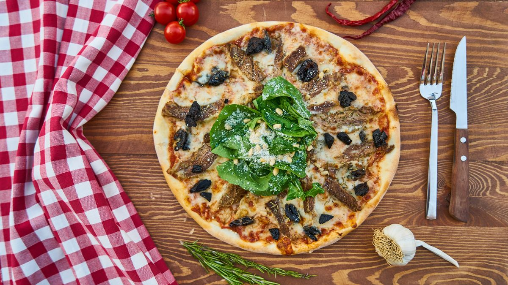
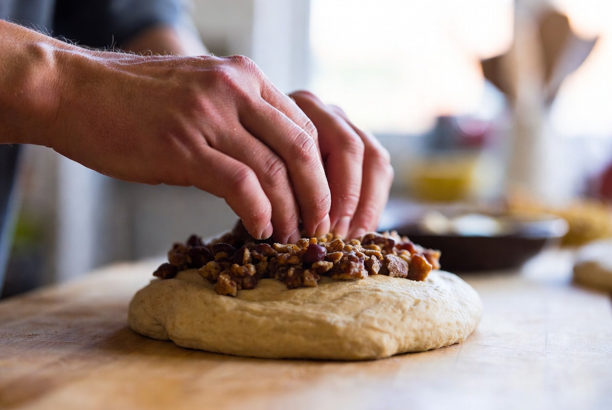

만들려던 빵 / 목표
목표는 1차 일지와 같습니다. 어릴 적 동네 빵집 밤식빵의 속 촉촉함과 밤이 빵과 한 덩어리처럼 느껴지는 식감. 1차에서 '밤 알맹이가 따로 노는 느낌'과 '굽기 중 토핑 흘러내림'이 나왔고, 원인 추정 2번이 토핑 시점이 늦다는 것이었습니다.
2025년 7월 5일 2차 실험입니다. 합격 후 약 한 달이 지났고, 1차 메모를 다시 읽으며 변수를 하나만 골랐습니다. 시럽 농도·반죽·굽기 조건은 1차와 동일하게 맞췄습니다. 바꾼 것은 밤과 시럽을 올리는 시점뿐입니다.
1차는 성형 직후 토핑을 올렸습니다. 2차는 1차 발효가 끝난 뒤, 성형하기 직전에 토핑을 올리고 가볍게 눌러 넣은 다음 봉합·성형했습니다. '더 일찍 붙여 본다'는 가설이었습니다.
기억 속 밤식빵은 밤 조각이 빵 위에 박혀 있는 느낌이었습니다. 1차에서 그 느낌이 약했으니, 반죽 표면이 아직 매끈하고 발효 기포가 살아 있는 시점에 시럽을 먼저 바르고 밤을 눌러 넣으면 결합이 나아지지 않을까 했습니다.
실패 1~3 — 눈에 보인 현상
- 굽기 중 흘러내림은 줄었지만 완전히 사라지지 않음 — 팬 가장자리에 시럽 자국이 남음
- 밤 밀착은 나아졌으나 겉면 일부는 여전히 분리감 — 한 입에서 빵과 밤이 동시에 느껴지는 구간과 아닌 구간이 섞임
- 다음 날 아침 식감 — 1차와 비슷하게 건조 쪽, 수분 변수는 아직 손대지 않음
가족 반응은 '밤이 더 잘 붙어 있다'였습니다. 제 기억 기준으로는 일부만 맞았다입니다. 흘러내림·밀착 모두 1차보다 나았지만, '그때 그 밤식빵'이라고 말할 단계는 아니었습니다.

단면 사진에서 밤 조각 아래 빵 조직이 1차보다 덜 갈라져 보였습니다. 토핑 시점만 바꿔도 겉면 결합에 차이가 난다는 것을 확인한 날이었습니다.
굽기 후 윗면을 보면 밤 조각이 빵 표면에 더 파묻혀 보였습니다. 완전히 해결되지는 않았지만, 1차의 '겉에 얹힌 느낌'보다 한 단계 나아졌다고 적어 두었습니다.
토핑을 앞당긴 날, 봉합선에 시럽이 묻어 손이 미끄러졌습니다. 두 번째 덩어리부터는 시럽을 표면 절반만 바르니 성형이 덜 흔들렸습니다. 같은 실험 안에서도 두 번째 반죽이 더 나았습니다.
원인 추정 (추정 vs 확인)
추정 2 (1차): 토핑 시점이 늦어 겉만 붙은 느낌 — 부분 확인. 1차 발효 후 올리니 밀착이 나아짐. 다만 가장자리 흘러내림은 남아 추가 원인 있음
추정 1 잔여: 시럽이 아직 표면에서 미끄러짐 — 시럽 농도는 1차와 같게 유지했으므로, 졸임 시간·브러싱 방식도 다음 후보
추정 3 (1차): 반죽 수분이 시험용 기준이라 다음 날 건조 — 아직 미검증. 2차에서도 수분은 건드리지 않아 다음 날 식감은 비슷했음
추정과 확인을 구분해 적습니다. 이번에 확인된 것은 '시점을 앞당기면 밀착이 좋아진다'까지입니다. 완전 해결은 아닙니다.
바꾼 변수 하나
이번에 바꾼 것은 토핑 시점 하나입니다. 1차: 성형 직후 올림. 2차: 1차 발효 종료 후, 둥글게 봉하기 전에 시럽을 바르고 밤 조각을 올린 뒤 손바닥으로 가볍게 눌러 고정.

시럽은 1차와 동일하게 설탕:물 2:1로 졸였습니다. 졸임 시간·반죽 종료 온도 24°C·1차 발효 50분·굽기 상화 200°C·하화 190°C·32분은 그대로였습니다. 2025년 7월 5일 실내 온도 27°C, 습도가 높아 1차 발효를 5분 줄였습니다. 발효 시간도 변수로 삼지 않기 위해 '손가락 눌림'으로만 판단했습니다.
다음 시도 계획
- 3차: 토핑 시점은 2차 유지 + 반죽 수분만 +2% (기능사 시험 반죽 대비)
- 시럽 졸임 시간·브러싱은 5차 전까지 보류
- 공통: 다음 날 아침 식감·단면 사진
2차에서 토핑 시점 가설은 부분 확인됐습니다. 다음 병목은 1차부터 이어진 다음 날 건조로 보입니다.

1차 결과를 어떻게 가져왔는가
1차 일지에서 '다음은 토핑 시점'이라고 적었고, 그대로 실행했습니다. R&D 방식대로 시럽 농도는 고정했습니다. 1차에서 시럽을 더 졸였을 때 흘러내림이 줄었다는 메모가 있었기 때문에, 2차에서 시럽을 약하게 만들 이유가 없었습니다.
기능사 때 익숙한 식빵 반죽을 그대로 썼습니다. 토핑만 연구하는 단계에서 반죽까지 바꾸면 1차·2차 비교가 깨집니다. 수분 실험은 3차로 미뤘습니다.
동기에서 적었듯, 그 빵집 레시피는 없습니다. 남은 것은 관찰과 메모뿐이라 1차 실패 목록을 그대로 2차의 출발점으로 삼았습니다.
7월 초 습도가 높아 1차 발효를 5분 줄였을 때, 반죽 표면에 얇은 피막이 생겼습니다. 그 상태에 토핑을 올리니 밀착이 나아졌다고 느꼈습니다. 습도 메모 없이는 2차 결과를 재현하기 어렵습니다.
R&D 일지를 읽는 분께
토핑 시점을 바꿔 보신 경험이 있으시면, 1차 발효 전·후·굽기 직전 중 어디가 가장 잘 붙었는지 문의로 알려 주세요. 오븐·팬 크기·밤 통조림 브랜드에 따라 답이 달라질 수 있습니다.
시리즈 읽기 순서는 안내 글에 정리해 두었습니다. 1차를 아직 안 보셨다면 먼저 읽으시는 편이 비교가 쉽습니다.
실전 적용 노트
실험 당일 메모: 2025-07-05, 실내 27°C, 반죽 종료 24°C, 1차 발효 45분(습도 보정), 토핑 시점 1차 발효 후, 시럽 2:1, 굽기 32분. 사진: 전체·토핑 클로즈업·단면·다음 날 아침.
토핑을 앞당길 때 주의한 점: 시럽을 너무 많이 바르면 성형 시 봉합이 미끄러집니다. 2차에서는 표면의 절반 정도만 얇게 발랐습니다. 봉합이 약해지면 공기 빠짐이 달라져 또 다른 변수가 생깁니다.
블로그 발행 2026년 6월 9일, 실험 2025년 7월 5일입니다.
2차 메모를 3차 실험 전에 다시 읽었을 때, '밀착은 나아졌다'와 '다음 날 건조는 그대다'가 동시에 보였습니다. 그래서 3차 변수로 수분을 선택한 경로가 이 메모에서 시작됩니다.
정리하며
2차는 토핑 시점 가설의 부분 확인이었습니다. 밀착이 나아졌고 흘러내림도 줄었지만, 다음 날 식감과 완전한 덩어리감은 아직 남았습니다. 3차에서는 반죽 수분을 소폭 올려 보겠습니다. 같은 밤식빵을 연구 중이신 분은 문의로 시점·밀착 경험을 나눠 주세요. 동기에서 시작한 프로젝트가 한 단계씩 쌓이고 있습니다.
초보자가 자주 실수하는 포인트
- 시럽 농도와 토핑 시점을 동시에 바꿔 무엇이 효과인지 모르게 만들기
- 토핑을 앞당기면서 시럽을 과하게 발라 성형·봉합을 망치기
- 부분 개선을 완성으로 착각하고 다음 변수 계획을 세우지 않기
- 습도·실내 온도 변화 없이 1차와 같은 발효 시간만 고집하기
체크리스트
- 1차와 시럽·반죽·굽기 조건 동일한지 확인
- 토핑 시점만 변경했는지 메모
- 밀착·흘러내림·다음 날 식감 세 가지 관찰
- 부분 성공·미해결 항목 구분해 적기
자주 묻는 질문
- 2차에서 토핑 시점만 바꿨다는 게 정확한가요?
- 네. 시럽 농도·반죽·굽기 온도·시간은 1차와 같게 맞췄고, 밤과 시럽을 올리는 단계만 1차 발효 후로 옮겼습니다.
- 부분 성공이면 다음에 뭘 바꾸나요?
- 다음 날 건조가 1차와 비슷해 3차에서 반죽 수분을 시험용 대비 +2%만 올릴 예정이었습니다.
이 글은 운영자의 직접 경험을 바탕으로 작성되었으며, 오븐·재료·환경에 따라 결과는 달라질 수 있습니다. 식품 위생·알레르기 등 건강 관련 판단을 대체하지 않습니다.